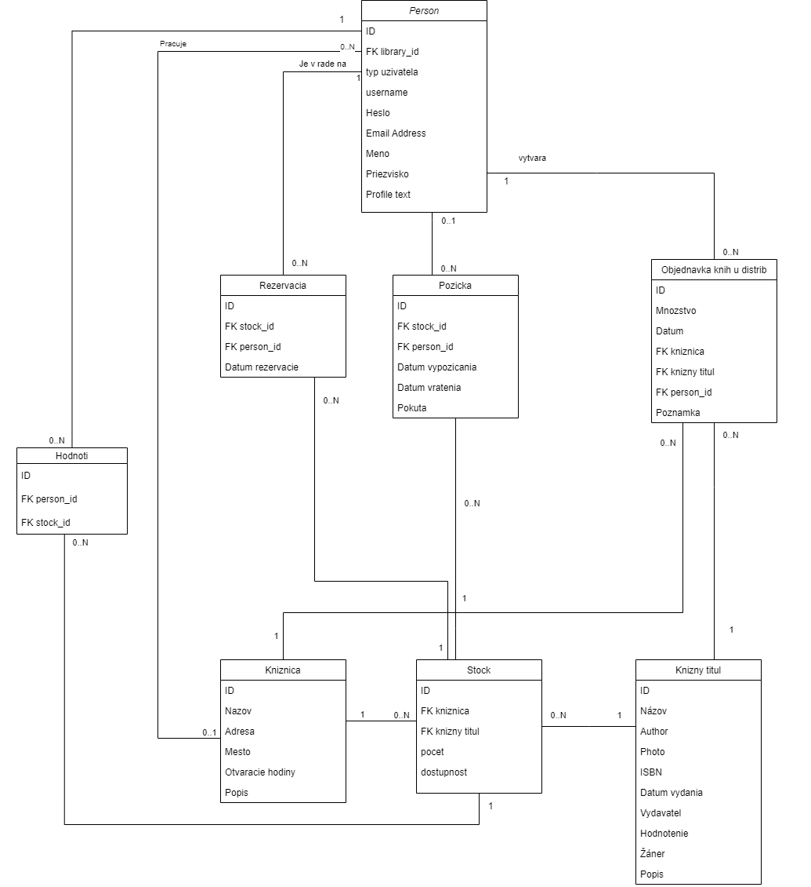

| Login | Heslo | Role |
|---|---|---|
| admin | admin | Administrátor |
| librarian1 | librarian1 | Knihovník |
| distributor1 | distributor1 | Distributor knih |
| user1 | user1 | Čtenář |
Backend je implementovany v Pythone pomocou Flask-u. Databáza je typu postgresql a je na zvlášť serveri. V zložke /api sú Flask-resources pomocou ktorých užívatelia pristupujú k dátam. Pre prístup k databazy využívame ORM pomocou SQLAlchemy. V súbore models.py v zložke /models sú uložené tabulky databázy
V zložke /fake_data sa nachádza script fake_data.py ktorý nahrá do databázy počiatočné dáta. Script potrebuje k spusteniu mať v zložke chromedriver.exe
Frontend je implementovaný pomocou JavaScriptovej knižnice React.js. Pre štýlovanie je použity utility-first framework Tailwindcss. Routing je vyriešený pomocou React DOM Router, ktorý sa stará o routovanie jednotlivých stránok. V zložke frontend/src sú vytvorené všetky komponenty a moduly. Súbor frontend/auth sa stará o autentifikáciu a autorizáciu. API Requesty sa posielajú pomocou Axios (promise-based HTTP Client)
Databáza je typu Postgresql
Postup inštalácie na sever (backend):
Vytvorenie pipenv enviromentpipenv install
Aktivácia pipenv enviromentu
pipenv shell
Spustenie back endu:
flask run
Postup inštalácie na sever (frontend):
Inštalácia node modulovnpm i
Vytvorenie produkčného buildu
npm run build
Požiadavky Backend (prevzaté z pipfile):
[requires]
python_version = "3.9"
[packages]
gunicorn = "*"
flask = "*"
pymysql = "*"
flask-admin = "*"
flask-psycopg2 = "*"
flask-sqlalchemy = "*"
flask-restful = "*"
flask-session = "*"
flask-cors = "*"
requests = "*"
faker = "*"
selenium = "*"
sqlalchemy = "*"
Požiadavky Frontend (prevzaté z package.json)
dependencies
@craco/craco: ^6.3.0,
@heroicons/react: ^1.0.4,
@testing-library/jest-dom: ^5.14.1,
@testing-library/react: ^11.2.7,
@testing-library/user-event: ^12.8.3,
axios: ^0.23.0,
react: ^17.0.2,
react-dom: ^17.0.2,
react-router-dom: ^5.3.0,
react-scripts: 4.0.3,
react-select: ^5.2.1,
web-vitals: ^1.1.2
devDependencies:
autoprefixer: ^9.8.8,
cors: ^2.8.5,
postcss: ^7.0.39,
prettier: ^2.4.1,
tailwindcss: npm:@tailwindcss/postcss7-compat@^2.2.16
Inicializácia DB:
Databáza sa resetuje a inicializuje príchodom stránku [url]/api/database/reset/[key] kde key je 12345, pričom je potrebné byť prihlásený ako admin. Následne je možné spustiť script fake_data.py ktorý naplní databázu dátami.
-